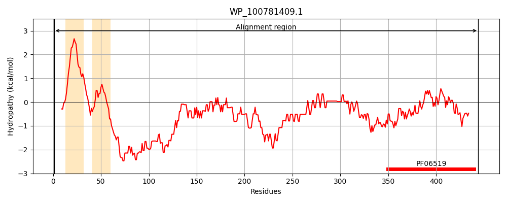
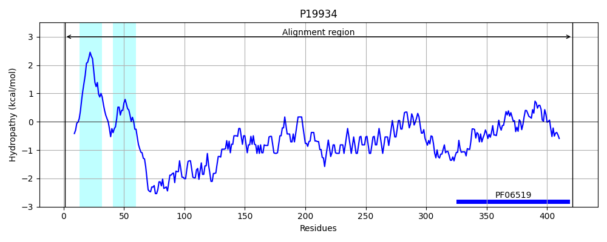
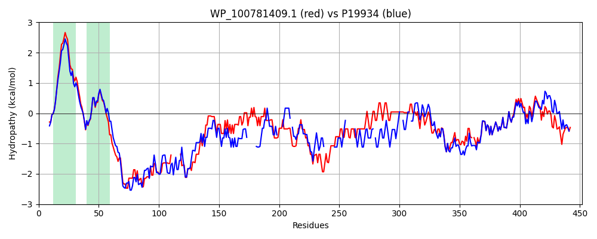

Hit Accession: P19934
Hit TCID: 2.C.1.2.1
Hit Description: gnl|BL_ORD_ID|9322 gnl|TC-DB|P19934|2.C.1.2.1 TOLA PROTEIN - Escherichia coli.
Mach Len: 452
e:0.000000
Query TMS Count : 2
Hit TMS Count: 2
TMS-Overlap Score: 2.000000
Predicted Substrates:CHEBI:8150;phospholipid
BLAST Alignment:
Score: 1463 , Bit scores: 568 bits, E-value: 0.0e+00, Alignment length: 452, Percentage identity: 74
Query: 1 MSKATEQNDKLKRAIIISVALHIILIALLIWSSFDEHLDASAGGGGGSSIDAVMVDPGAVVNNYNRQQQQQASARRAAEQREKQAQQQAEELREKQAAEQERLKQLEQERL-------QAQEAAKEAKEQQKQAEEAAAKAAAAAKAKVDAQAKEAQEAAAKAAVDAKAKADAQAKAAELAAAKAAADAKKQADAAAAKAAADAKKQAEAEAAKAAAEAQKKAEAAAAKKAQQEAEKKAQQEAAKQAAAEKAAAEKAAEKAAEKAAAQKAAAEKAAAEKAAAAEKAAAAKAAAAEKAAADKAAKAAAAKAAAAKKAAAAKEADGVDDLLGDLSSGKNAPKTGGGAKGNNASAAGSGNTKNS-ASGADINNYAGQIKSAIESKFYDASSYAGKTCTLRIKLAPDGLLLNIQSEGGDPALCQAALAAARQAKFPKPPSQAVYEVFKNAPLDFKP 444
MSKATEQNDKLKRAIIIS LH+IL A LIWSSFDE+++ASAGGGGGSSIDAVMVD GAVV Y R Q Q++SA+R+ EQR+ + QQ AEELREKQAAEQERLKQLE+ERL QA+EAAK+A+ +QKQAEEAAAKAAA AKAK +A AK A+EAA KAA DAK KA+A+ AAKAAA+A+K+A+AAAA KK+AEA A AAAEA+KKA AA+KA+ EAEKK AAAEKAAA+K KAAA+KAAA+K AAEK AAAEKAAA K AAAEKAAADK KAAAAK AAA+KAAAAK A DD+ G+LSSGKNAPKTGGGAKGNNAS AGSGNTKN+ ASGADINNYAGQIKSAIESKFYDASSYAGKTCTLRIKLAPDG+LL+I+ EGGDPALCQAALAAA+ AK PKPPSQAVYEVFKNAPLDFKP
Sbjct: 1 MSKATEQNDKLKRAIIISAVLHVILFAALIWSSFDENIEASAGGGGGSSIDAVMVDSGAVVEQYKRMQSQESSAKRSDEQRKMKEQQAAEELREKQAAEQERLKQLEKERLAAQEQKKQAEEAAKQAELKQKQAEEAAAKAAADAKAKAEADAKAAEEAAKKAAADAKKKAEAE-------AAKAAAEAQKKAEAAAAA----LKKKAEA-AEAAAAEARKKAATEAAEKAKAEAEKK--------AAAEKAAADK-------KAAAEKAAADKKAAEK-AAAEKAAADKKAAAEKAAADK--KAAAAK-AAAEKAAAAKAAAEADDIFGELSSGKNAPKTGGGAKGNNASPAGSGNTKNNGASGADINNYAGQIKSAIESKFYDASSYAGKTCTLRIKLAPDGMLLDIKPEGGDPALCQAALAAAKLAKIPKPPSQAVYEVFKNAPLDFKP 421 | Protein Hydropathy Plots: |
|---|
|  |  |
Pairwise Alignment-Hydropathy Plot:
|
|---|
|  |